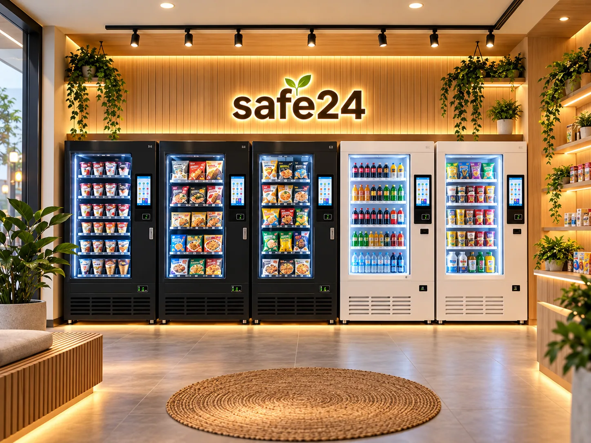
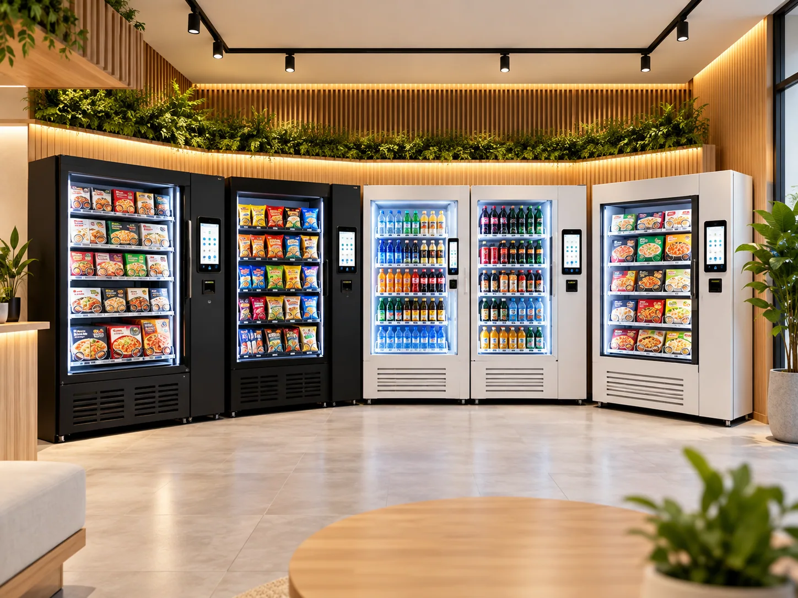

냉동 상품
아이스크림과 냉동식품 등 냉동 보관이 필요한 상품군
스마트 멀티자판기와 냉동자판기를 조합해 아이스크림·냉동식품·음료·간식 등 다양한 상품을 판매하는 무인매장 구성안입니다.

연출 이미지판매 상품과 매장 규모에 맞는 장비 조합을 검토하세요.
아이스크림과 냉동식품 등 냉동 보관이 필요한 상품군
생수와 음료 등을 판매할 수 있는 기기 구성
과자·잡화·반려동물 간식 등 점포 특성에 맞는 상품 구성
여러 대의 자판기를 설치한다면 기기 크기뿐 아니라 고객 이동 동선, 보충 작업, 전기 용량, 통신, 설치·반입 경로를 함께 고려해야 합니다.

멀티·냉동자판기 모델과 대수에 따라 달라집니다. 실제 장비 견적은 별도로 확인해야 합니다.
10평 기준 인테리어 참고 비용은 약 2,000만 원입니다. 전기·도배·바닥 공사 등의 포함 범위는 견적 시 확인해야 합니다.
위 2,000만 원은 인테리어 관련 참고 견적으로, 자판기 구매비·임대차 보증금·초기 상품비 등을 모두 포함한 총창업비가 아닙니다. 공간 조건과 실제 시공 범위에 따라 달라집니다.
아닙니다. SAFE24는 멀티자판기와 냉동자판기 등 여러 대의 기기를 조합하는 무인매장 구성안입니다.
정해진 대수보다 상품군, 공간 규모, 예산, 전기 용량, 이용 고객 수요를 고려한 구성이 중요합니다. 현장 조건을 확인한 후 적합한 대수를 제안받을 수 있습니다.
10평 기준 약 2,000만 원은 인테리어비 참고 금액입니다. 자판기 구매 비용과 기타 초기비용은 별도 확인해야 합니다.
문의 내용은 제휴 제품 공급 담당자에게 연결되며 상세 견적, 계약, 설치·유지관리는 공급업체 상담 과정에서 안내됩니다.
자판기 기반 무인매장은 멀티자판기와 냉동자판기 등을 한 공간에 배치하고, 상품 보충과 재고·매출 관리를 운영자가 담당하는 방식입니다. 일반 무인점포와 달리 판매 기기 자체가 상품 선택과 결제·인출 기능을 담당하므로 점포 규모보다 적절한 기기 조합과 운영 동선이 중요합니다.
SAFE24는 이러한 방식으로 다양한 기기를 조합하는 무인매장 제안 명칭입니다. 처음부터 SAFE24라는 이름을 알아야 하는 것은 아닙니다. 무인매장 창업을 고민하는 고객이 기기 구성과 비용을 이해한 뒤 선택할 수 있도록 안내합니다.
| 유형 | 기기 조합 예시 | 검토할 사항 |
|---|---|---|
| 소형 예시 | 멀티 1대 + 냉동 1대 | 설치 면적·상품군의 중복 확인 |
| 중형 예시 | 멀티 2대 + 냉동 2대 | 전기 용량·보충 동선 검토 |
| 확장 예시 | 판매 상품에 따라 5대 이상 | 회전율·관리 인력·시설비 검토 |
대수와 조합은 이해를 돕기 위한 계획 예시이며 실제 공급 패키지나 보장 수익을 의미하지 않습니다.
무인매장 창업비용은 자판기 구매비와 인테리어 비용만으로 끝나지 않습니다. 임대차 보증금, 전기·통신 시설, 운송·반입, 냉동 관련 설비, 초기 상품 매입과 재고 관리 비용을 구분해야 전체 예산을 비교할 수 있습니다.
SAFE24 제공 자료에는 10평 인테리어 참고 금액 약 2,000만 원이 제시되어 있지만, 이 금액이 전체 창업비용을 뜻하는 것은 아닙니다. 자판기 구입비와 임대차 비용, 상품비 등은 별도로 계산해야 합니다. 매장 조건과 공사 범위에 따라 실제 비용은 달라집니다.
무인 운영이라도 상품 발주·보충, 소비기한 관리, 위생·청결, 문의 대응, 기기 점검을 담당할 운영자는 필요합니다. 냉동식품 취급 여부와 영업 형태에 따라 신고·시설 기준도 별도로 확인해야 합니다.
구매 상담에서는 매장 주소와 예상 면적, 주요 판매 상품, 예산 범위를 함께 전달하면 적합한 기기 구성에 대한 논의를 구체적으로 시작할 수 있습니다.
문의 접수 후 공급 담당자가 제품·구매 조건·설치 일정을 안내합니다.